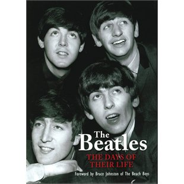

BEATLES
by Richard Havers
- Description
- The most famous pop band in the world, even today The Beatles hold centre stage. Anyone who lived through the 1960s remembers them and the digital remastering of their output has ensured that younger generations know them too. How could they not? The songs will live forever and are regularly reused in film or TV scores, on adverts, and on radio channels everywhere.
- Price
- $9.50 USD
- Related titles
- Commander in Chief, Into the Fire